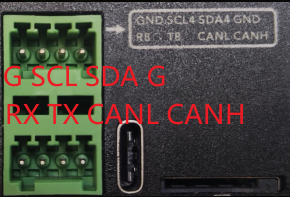
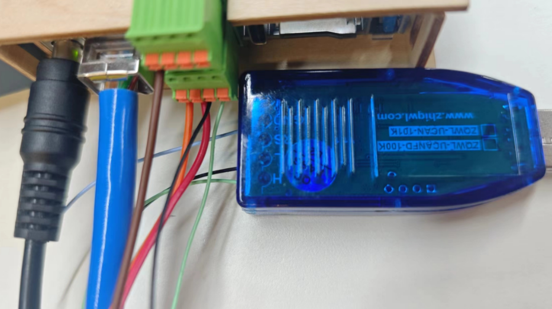
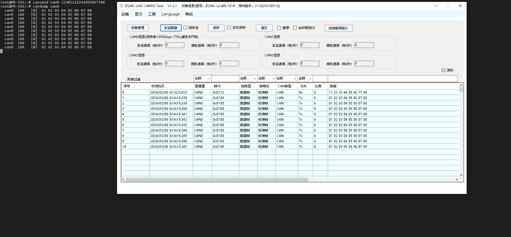
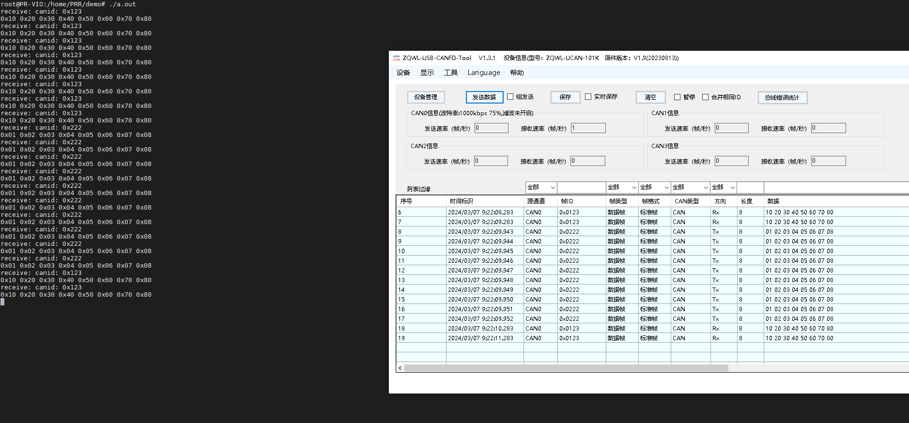

Viobot的CAN使用
下面我们来介绍Viobot的CAN口使用

1.接口定义
Viobot面有一个2*4pin的接口母座，接头我们发货的时候会放在盒子里面的。
我们可以看到第一排从左到右引脚分别是GND SCL SDA GND
第二排从左到右分别是RX TX CANL CANH
对应的设备号：CAN0
2.硬件连接
此处使用Viobot与windows电脑的CAN转USB模块通信作为例子。
我们可以先去某宝上买一个带上位机的CAN转USB模块，将Viobot的CANL和CANH接到模块的CANL和CANH上面，然后将模块插到电脑。

3.命令行测试
sudo apt install can_utils
ifconfig can0 down
ip link set can0 type can bitrate 1000000
ifconfig can0 up
#发送数据
cansend can0 123#1122334455667788
#接收can总线上的数据
candump can0

4.代码
测试完成后，开始进入编程环节。
我们这里使用的是socket_can,程序里面没有使用任何ROS相关的操作，所以跟ROS/ROS2无关，程序都是通用的。
（1）can_demo.cpp
两个线程，主线程1秒发送一帧数，另外一个线程一直接收数据，把总线上接收到的数据打印出来。
#include <thread>
#include <iostream>
#include "socket_can.hpp"
Socket_Can socket_can;
void can_receive_thread(){
struct can_frame rec_frame;
while(1){
int ret = socket_can.receive_can_frame(rec_frame);
// printf("ret = %d\r\n",ret);
std::cout << "receive: canid: 0x" << std::hex << rec_frame.can_id << std::endl;
for(int i = 0; i < rec_frame.can_dlc; i++){
printf("0x%02x ",rec_frame.data[i]);
}
std::cout << std::endl;
}
}
int main(int argc,char **argv){
try{
socket_can.can_init();
}
catch(const std::runtime_error& e){
socket_can.close_socket();
}
std::thread can_recieve = std::thread(can_receive_thread);
struct can_frame my_frame;
/*TEST*/
my_frame.can_id = 0x123;
my_frame.can_dlc = 8;
my_frame.data[0]= 0x10;
my_frame.data[1]= 0x20;
my_frame.data[2]= 0x30;
my_frame.data[3]= 0x40;
my_frame.data[4]= 0x50;
my_frame.data[5]= 0x60;
my_frame.data[6]= 0x70;
my_frame.data[7]= 0x80;
while(1){
try{
socket_can.send_can_frame(my_frame);
}catch(const std::runtime_error& e){
socket_can.close_socket();
}
sleep(1);
}
}
（2）Socket_can.hpp
简单封装的一个can口类，包含了初始化，发送和接收三个最基本的。
#pragma once
#include <cstdio>
#include <cstdlib>
#include <cstring>
#include <iostream>
#include <stdexcept>
#include <sstream>
#include <unistd.h>
#include <sys/ioctl.h>
#include <sys/socket.h>
#include <linux/can.h>
#include <linux/can/raw.h>
#include <net/if.h>
#include <termios.h>
/* special address description flags for the CAN_ID */
#define CAN_EFF_FLAG 0x80000000U /* 扩展帧的标识 */
#define CAN_RTR_FLAG 0x40000000U /* 远程帧的标识 */
#define CAN_ERR_FLAG 0x20000000U /* 错误帧的标识，用于错误检查 */
/* mask */
#define CAN_SFF_MASK 0x000007FFU /* <can_id & CAN_SFF_MASK>获取标准帧 ID */
#define CAN_EFF_MASK 0x1FFFFFFFU /* <can_id & CAN_EFF_MASK>获取标准帧 ID */
#define CAN_ERR_MASK 0x1FFFFFFFU /* omit EFF, RTR, ERR flags */
/*
struct can_frame {
canid_t can_id; // CAN 标识符
__u8 can_dlc; // 数据长度（最长为 8 个字节）
__u8 __pad; // padding
__u8 __res0; // reserved / padding
__u8 __res1; // reserved / padding
__u8 data[8]; // 数据
};
*/
class Socket_Can{
public:
Socket_Can(){
}
~Socket_Can(){ close(socket_fd); }
void can_init(){
/*打开套接字*/
socket_fd = socket(PF_CAN,SOCK_RAW, CAN_RAW);
if(0 > socket_fd){
throw std::runtime_error("socket error!");//std::system_error
}
system("ifconfig can0 down");
system("/sbin/ip link set can0 type can bitrate 1000000");
// system("/sbin/ip link set can0 type can loopback on");
// system("/sbin/ip link set can0 type can loopback off");
system("ifconfig can0 up");
/*指定CAN设备*/
strcpy(ifr.ifr_name,"can0");
ret = ioctl(socket_fd,SIOCGIFINDEX, &ifr);
can_addr.can_family = AF_CAN; /*填充数据*/
can_addr.can_ifindex = ifr.ifr_ifindex;
if(ret < 0){
std::stringstream ss;
ss << "Failed to get index for " << "can0" << " device";
throw std::runtime_error(ss.str());
}
/* 将can0与套接字进行绑定 */
ret = bind(socket_fd, (struct sockaddr *)&can_addr, sizeof(can_addr));
if(ret < 0){
throw std::runtime_error("bind error!");
}
// ifr.ifr_flags &= ~IFF_UP; //
// ret = ioctl(socket_fd, SIOCSIFFLAGS, &ifr);
// ifr.ifr_flags |= IFF_UP; // 开启接口
// ret = ioctl(socket_fd, SIOCSIFFLAGS, &ifr);
// if(ret < 0)
// {
// throw std::runtime_error("Error bringing up CAN interface");
// }
// setsockopt(socket_fd, SOL_CAN_RAW, CAN_RAW_FILTER, NULL, 0);/* 设置过滤规则：不接受任何报文、仅发送数据 */
// rfilter[0].can_id = 0x60A;
// rfilter[0].can_mask = CAN_SFF_MASK;
// rfilter[1].can_id = 0x60B;
// rfilter[1].can_mask = 0x7FF;
// // 调用 setsockopt 设置过滤规则
setsockopt(socket_fd, SOL_CAN_RAW, CAN_RAW_FILTER, &rfilter, sizeof(rfilter));
}
void send_can_frame(const struct can_frame& xframe){
ret = write(socket_fd,&xframe,sizeof(xframe));
if(ret != sizeof(xframe)){
throw std::runtime_error("CAN_Send error!");
}
}
int receive_can_frame(struct can_frame& xframe){
ret = read(socket_fd,&xframe,sizeof(xframe));
// if(ret != sizeof(xframe))
// {
// throw std::runtime_error("CAN_Read error!");
// }
return ret;
}
void close_socket(){
close(socket_fd);// 关闭套接字
}
private:
struct ifreq ifr = {0};
struct sockaddr_can can_addr = {0};
int socket_fd = -1;
int ret;
struct can_filter rfilter[2];
};
（3）编译运行
将上面的hpp文件和cpp文件单独放到一个文件夹里面，直接g++编译即可
g++ can_dmo.cpp -lpthread
./a.out
效果：
每秒向can总线发送一帧数据，接收到can总线的数据会打印到终端
